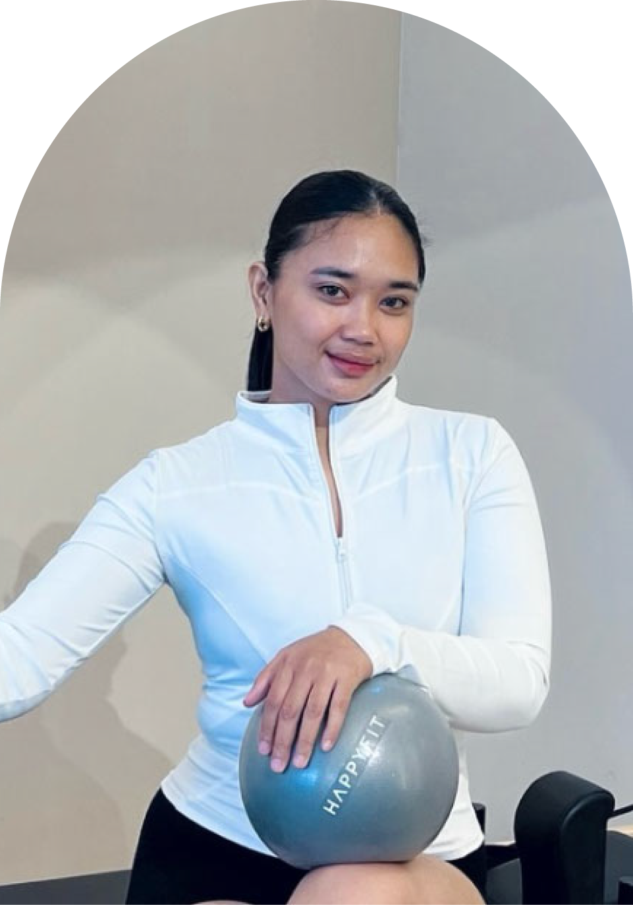
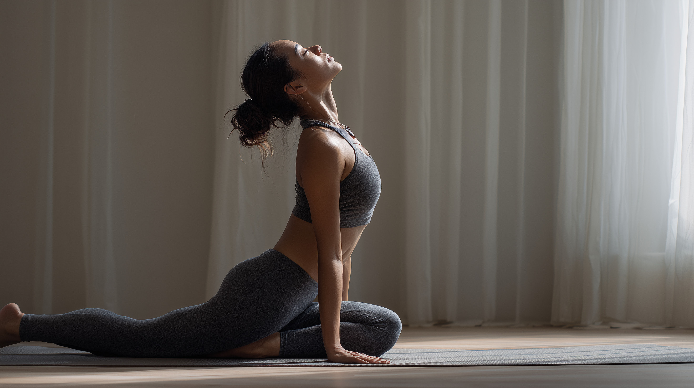

Meet the movement behind 3Motions
Winda
Anggraini
Creating a place where women can move with confidence, curiosity, and care.

Founder & Pilates Instructor
Movement is a form of self-respect.
For over five years, Winda Anggraini has helped women feel at home in their bodies through intentional, intelligent movement. Her classes pair classical Pilates foundations with a warm, modern approach that meets every member exactly where she is.
Winda believes that progress is not a rush toward perfection. It is the quiet confidence built by returning to yourself, one mindful repetition at a time.
Qualifications
Trained to help you move well
Comprehensive Pilates Instructor
Certified in mat and reformer Pilates methodology.
Pre & Postnatal Pilates
Specialist training for safe, empowering movement through motherhood.
Corrective Exercise
Focused on posture, mobility, and durable strength.

